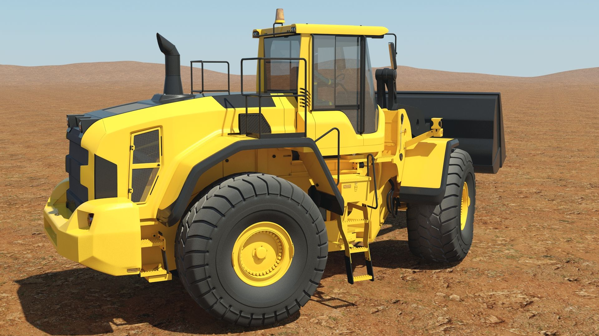

Servicio Principal
Alquiler de Maquinaria Pesada
Excavadoras, cargadores frontales y volquetes modernos para grandes proyectos.
Solicitar Cotización
Transporte
Transporte de Agregados
Transporte seguro de arena, piedra y materiales de construcción a toda la región.
Solicitar Cotización
Movimiento de Tierras
Movimiento de Tierras
Preparación, nivelación y excavación profesional para todo tipo de obra civil.
Solicitar Cotización
Maquinaria
Excavadora
Alta potencia para movimiento de tierra, demolición y apertura de zanjas.
Solicitar Cotización
Maquinaria
Tractor sobre Oruga
Ideal para construcción, minería y habilitación de terrenos con alto rendimiento.
Solicitar Cotización
Transporte
Volquetes
Alta capacidad para transporte de tierra, arena, piedra y desmonte en obra.
Solicitar Cotización

Maquinaria
Cargador Frontal
Manipulación y carga eficiente de agregados y material a granel con alta productividad.
Solicitar Cotización
Transporte Especial
Cama Baja
Transporte de maquinaria pesada y materiales de gran dimensión con total seguridad.
Solicitar Cotización
Equipos
Compresora Atlas Copco
Alta eficiencia para construcción y mantenimiento industrial. Potencia garantizada.
Solicitar Cotización